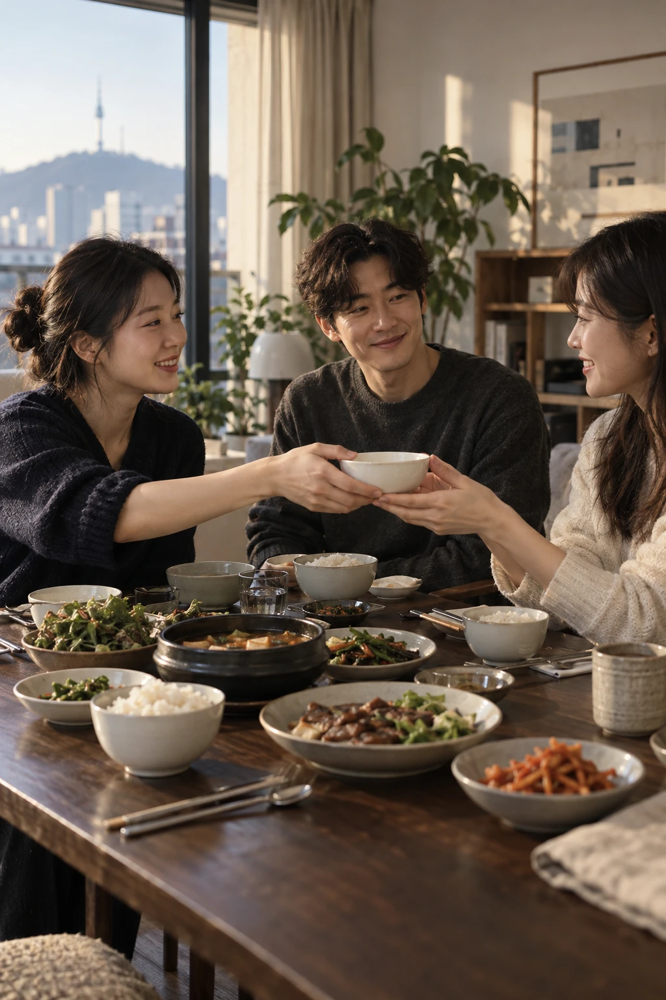
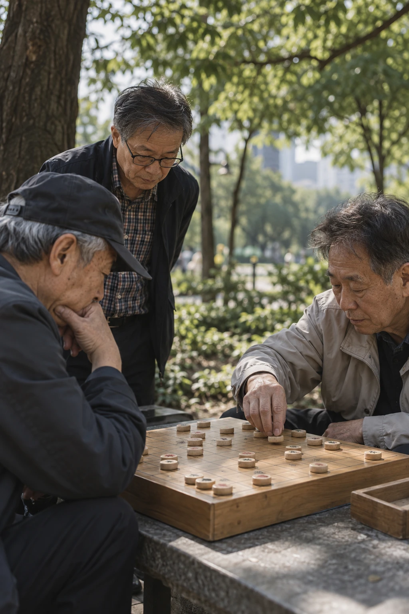

함께 식사하는 장면과 장기 놀이 장면은 2026년 YEAR:ON을 위해 제작한 AI 이미지입니다. 실제 인물·사건의 기록 사진이나 역사 자료가 아닙니다.
Created with the built-in OpenAI image generation tool. These are illustrative contemporary scenes, not documentary photographs.


K-ARCHIVE ↗